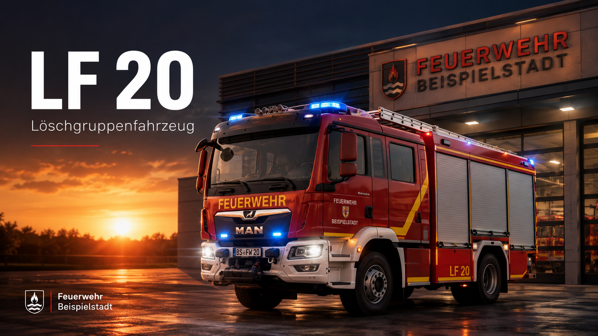
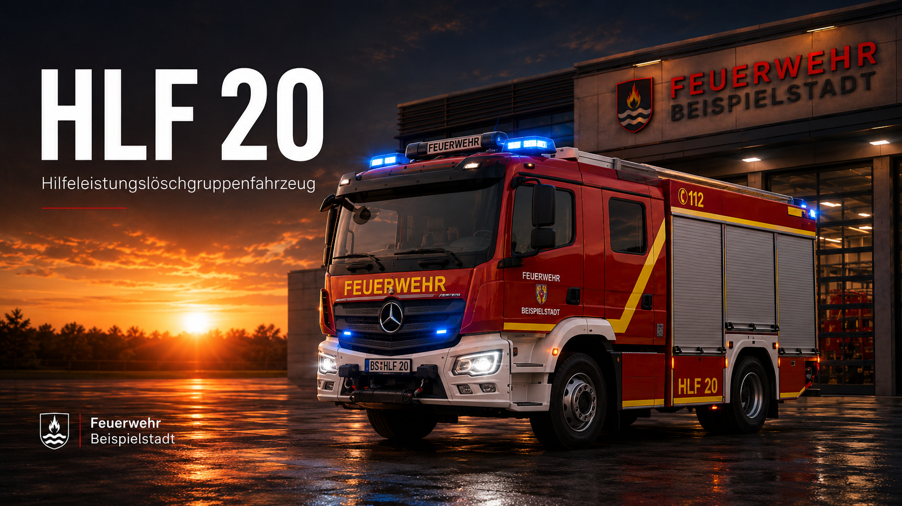
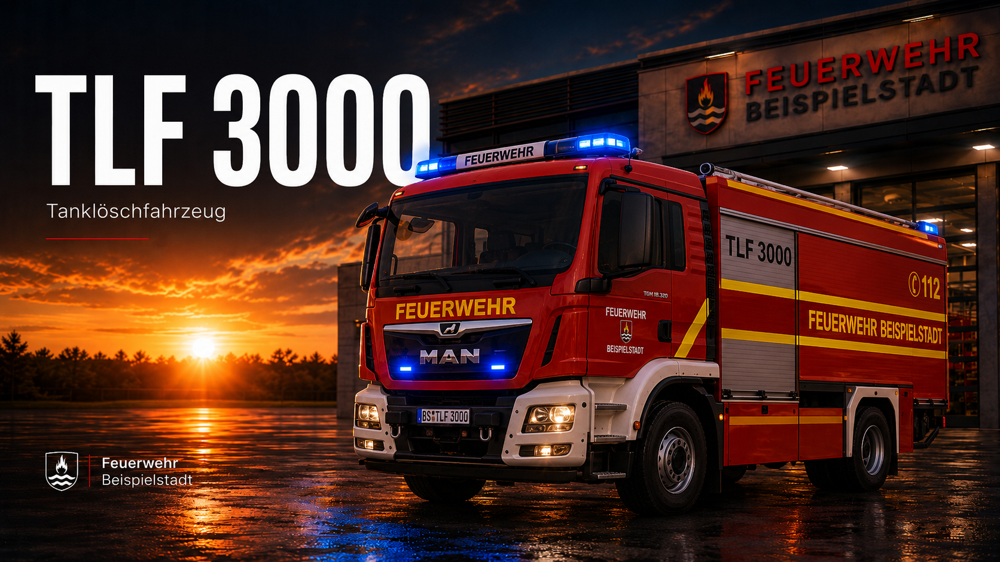
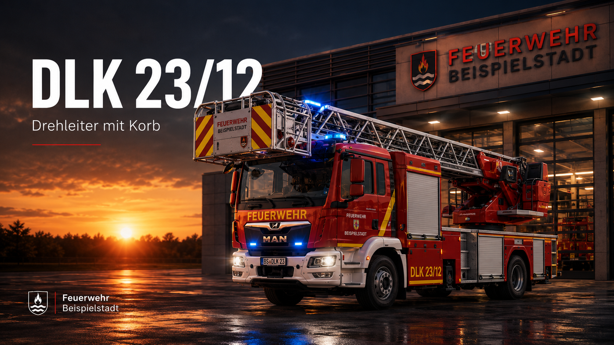
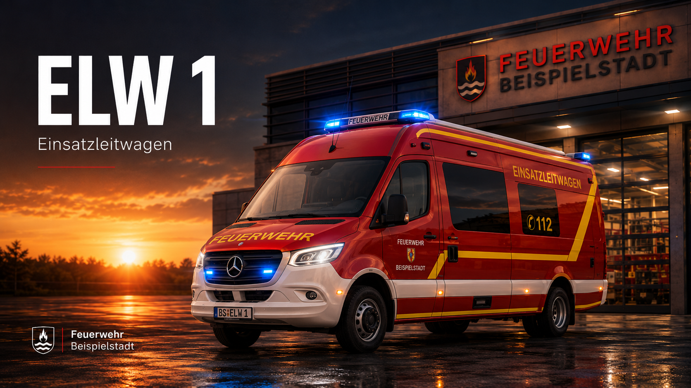

LF 20
Das LF 20 ist das Rückgrat der Brandbekämpfung. Es führt umfangreiche Beladung zur Brandbekämpfung, technischen Hilfeleistung und Menschenrettung mit.
Detailseite öffnenTechnik für jede Lage
Vom Löschgruppenfahrzeug bis zum Einsatzleitwagen: Unsere Fahrzeuge bilden die operative Grundlage für schnelle Hilfe.

Das LF 20 ist das Rückgrat der Brandbekämpfung. Es führt umfangreiche Beladung zur Brandbekämpfung, technischen Hilfeleistung und Menschenrettung mit.
Detailseite öffnen
Das HLF 20 verbindet Brandbekämpfung und technische Hilfeleistung. Es kommt bei Verkehrsunfällen, Türöffnungen, Bränden und Unwettereinsätzen zum Einsatz.
Detailseite öffnen
Das TLF 3000 stellt besonders bei Wald-, Flächen- und Fahrzeugbränden eine schnelle Wasserversorgung sicher.
Detailseite öffnen
Die Drehleiter dient der Menschenrettung aus Höhen, der Brandbekämpfung von oben sowie der technischen Hilfeleistung.
Detailseite öffnen
Der ELW 1 unterstützt Einsatzleiterinnen und Einsatzleiter mit Kommunikation, Dokumentation und Lageführung.
Detailseite öffnen
Das MTF dient dem Transport von Einsatzkräften, Jugendfeuerwehr, Material und Logistik bei Diensten und Veranstaltungen.
Detailseite öffnenGerätehaus
Fahrzeuge, Gerätewartung, Ausbildung und Kameradschaft laufen im Gerätehaus zusammen.
Gerätehaus ansehen